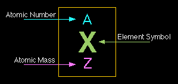

All matter is made up of atoms, which are the smallest units of chemical elements. Atoms themselves are made up of three main subatomic particles: protons, neutrons, and electrons. These particles have different charges and locations within the atom.
The center of the atom is called the nucleus, which contains protons and neutrons. Electrons move around the nucleus in energy levels or shells. Most of the atom's mass is concentrated in the nucleus, while most of its volume comes from the electron cloud.
Example: Carbon has 6 protons and 6 neutrons. So its atomic number is 6 and mass number is 12.
| Particle | Charge | Relative Mass | Location |
|---|---|---|---|
| Proton | +1 | 1 | Nucleus |
| Neutron | 0 | 1 | Nucleus |
| Electron | -1 | 1/1836 | Electron shell |
Written by Thenura Dilruk